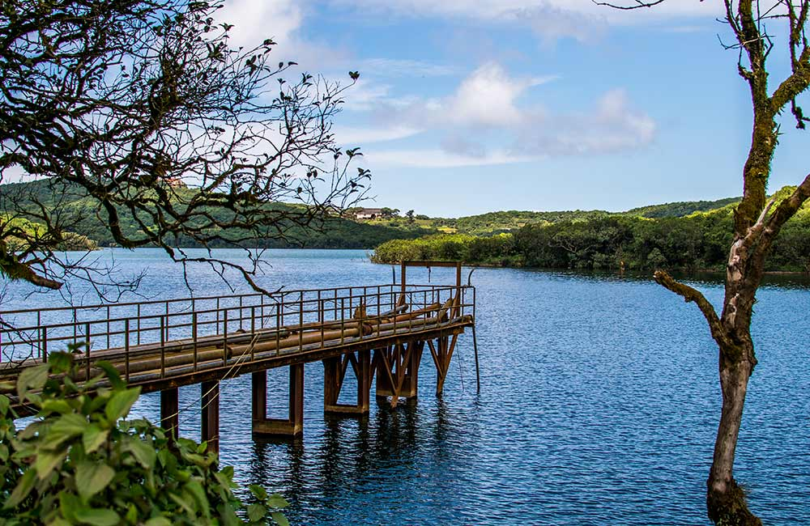

TOURIST PLACES IN MAHARASHTRA
Say Maharashtra and the image of a kilometres-long Marine Drive promenade
flashes across your mind, quickly followed by the front view of the Gothic
Victorian structure—Chhatrapati Shivaji Maharaj Terminus. Both are famous
landmarks in Mumbai, the most popular city in Maharashtra. But there is
more, much more to the third-largest state in India. Pristine beaches,
surreal hill stations, adventurous treks, strawberry farms, wildlife
sanctuaries, pilgrimage sites, rich history, scrumptious food and a
vibrant culture—it has something for everyone.
If you have never thought of vacationing in Maharashtra then probably it
is time you discover the beauty of the state and bring home some
memorable experiences it offers. Here’s a comprehensive list of
places to visit in Maharashtra for a complete and fulfilling trip
- Mumbai,Maharashtra

Mayanagri, the city of dreams, the one that never sleeps, India’s
financial centre, Bollywood—Mumbai has many names and it lives up to each
of them every day. Dotted with well-maintained architectural wonders from
India’s colonial past, Mumbai offers a visual treat to Gothic architecture
lovers. Meanwhile, for those who wish to experience the charm of a
fast-moving city, a quick hop on the Mumbai local during the peak hours
will be a story to tell. Or just embark on a 15-minute ferry ride from
Gateway of India jetty to revisit a lost world at Elephanta
Island.
Also Read:
Places To Visit In Mumbai
- Pune,Maharashtra

Cultural capital of Maharashtra, Pune holds a place of pride in every
Marathi’s heart. Once a political centre of the Indian sub-continent, Pune
was the seat of Peshwas of the Maratha Empire. The district alone boasts
of 17 forts of which the most famous are Shaniwar Wada, Singhagad
Fort and Purandar Fort, closely followed by a remarkably different looking
Aga Khan Palace that served as a prison for Mahatma Gandhi and Kasturba
Gandhi soon after he launched the Quit India movement. Pune is a heaven
for an art, culture and adventure lover.
Also Read:
Places To Visit In Pune
- Mahabaleshwar,Maharashtra

Nestled amid the scenic Western Ghats, this popular hill station is known
for its breath-taking landscapes, evergreen timberlands, waterfalls and
ancient temples. A trip to Mahabaleshwar means boating in Venna Lake,
undertaking a sunset trek to the Pratapgarh Fort, visiting Rajpuri Caves,
tantalising your taste buds with freshly-plucked berries and clicking
picture-perfect photos with astounding views of the hills and valleys in
the background.
Also Read:
Places to Visit in Mahabaleshwar
- Lonavala,Maharashtra

Located between Mumbai and Pune, this beautiful hill station offers a
quick getaway from the rushed city life. Famous for mouth-watering chikki
(Indian candy made of nuts set in jaggery or sugar syrup), Lonavala offers
a scenic drive from both cities. The beautiful winding roads and long
tunnels on the Pune-Mumbai Expressway is a reason enough to keep going
back to Lonavala. While Lonavala itself is a very small hill station, it
is surrounded by some of the
best tourist places in Maharashtra such as Pawna Lake, Lohagarh
Fort, Visapur Fort, Tiger’s Point, Bhaja Caves, Kune Falls and Shree
Narayani Dham Temple. You can also enjoy camping and trekking in
Lonavala.
Also Read:
Places to Visit in Lonavala
- Nashik,Maharashtra

Nashik is one of the most important holy
places to visit in Maharashtra. As per Hindu mythology, Lord Rama
stayed in Nashik during his 14 years of exile. For Rama devotees, a visit
to Nashik is incomplete without visiting the famous Kalaram Temple where a
black statue of Lord Rama is worshipped. The sanctum sanctorum of the
temple also houses black statues of god Lakshmana and goddess Sita. Nashik
is one of the four main sites for Kumbh Mela. Held once every 12 years,
the event attracts millions of devotees from across the globe. In Nashik,
besides religious visits, you can indulge in the natural beauty of the
city and visit popular attractions such as Dudhsagar Waterfalls, Sula
Vineyards, Coin Museum and Pandav Leni Caves
Also Read:
Places to Visit in Nashik
- khopoli,Maharashtra

This industrial city in the Raigarh district of Maharashtra is a popular
weekend getaway from both Mumbai and Pune. It serves as a perfect
destination for those looking to spend time in a quiet and peaceful place
amidst nature. Imagica Amusement Theme Park, one of the best entertainment
destinations in the country, is situated in Khapoli. While here, you can
seek blessings at
Shri Vireshwar Mahadev Temple and Shri Varadvinayak Temple, and
admire the natural beauty of Kune Waterfall, Zenith Waterfall and Tungarli
Lake.
Also Read:
Places to Visit in khopoli